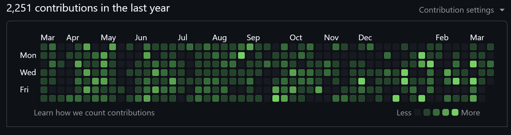
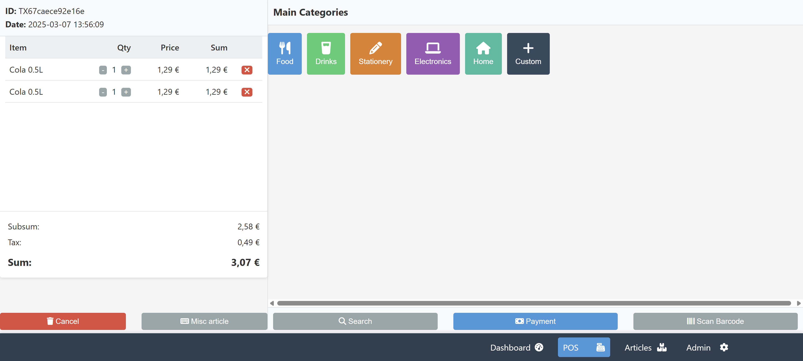

Kurzüberblick
- Vorletzte Stelle: Kündigugen nach Schließung von 60% der Kunden durch den Staat (Corona)
- Letzte Stelle: Die entwickelte Software wurde durch Auftauchen von KI überflüssig
- Seit Herbst: Massive Änderungen in der Softwarentwicklung durch KI (dauert an),
entsprechende Weiterbildungsaktivitäten erforderlich (zeitaufwendig s.u.)
- Möbilität: Kein Fahrzeug, Nürnberg nicht erreichbar (8 Busse, 2 Züge pro Tag)
- Konzept: Seit > 10 Jahren teilzeit 16 St./Wo Home Office, Bewerbungen bundesweit
(mehr Firmen als regional)
- Marktanalyse: siehe unten
Bewerbungsaktivitäten
für Details auf die Links klicken ...
Weiterbildungsaktivitäten
Grundlegende Änderung in der Softwareentwicklung:
Seit Herbst 2024 gibt es Endwicklungsumgebungen (IDEs) die KIs erstmals Zugriff auf hunderte Codedateien ermöglichen aus denen ein Programm besteht. Dadurch kann die KI nun erstmals effektiv programmieren. Die Rolle des Softwareentwicklers verschiebt sich von jemandem der Code schreibt, zu jemandem der die KI mittels einer Serie von Prompts anleitet ("AI first developer"), während die KI nun den (meisten) Programmcodes schreiben kann. Der Aufwand wird dadurch nicht unbedingt weiger.

Jahresübersicht Entwicklungsaktivitäten 2024-2025 (nur manche Projekte sind auf github veröffentlicht),
Quelle: https://github.com/walter-a-jablonowski
Alle Weiterbildungsaktivitäten (zeitaufwendig)
- seit Herbst 2024: Entwicklung einiger Software mit "AI first" approach (siehe unten)
- Erfahrung mit "AI first" dadurch nachweisbar
- Ein paar der Programme: github
- Nutzung der jeweils neuesten IDEs und Technologien z.B.
- IDEs: z.B.
Windsurf IDE,
Cursor,
u. A.
- Lokale AIs (ollama): llama, qwen, gemma3, glm4, u.A.
- MCP-Server
- derzeit kommen alle 2-4 Wochen neue Technologien hinzu
- Entwicklung von KI-Systemen z.B.
- zunehmende Nutzung von Python
- Agentic-Systeme (begonnen)
- andere typische KI-Systeme (geplant)
Beispiele von mit KI entwickelter Software seit Herbst 2024 ("AI first")
- KI generierte Anwendungen für Jobsuche
- Job crawler (in Arbeit)
- Job scraper (in Arbeit)
- Bewerbung generieren (fertig)
- KI-Systeme
- KI basierte Pflege von Wissensdatenbanken (2 Anwendungen)
- KI Agents (in Arbeit)
- Erfahrung in der Entwicklung mit KI und Erforschen der Fähigkeiten von KI
- Anwendung für Wocheneinkauf (fertiggestellt)
- Kassensystem (teilweise fertig, siehe unten)
- CRM System (begonnen)
- Process management System (begonnen)
- Time trcking (begonnen)
- Bitcoin robos (teilweise fertig)
- Sticky board application (teilweise fertig)
- UIs mit KI generieren (verschoben)

Marktanalyse
erstellt mit Google Gemini Deep Research, zusammengefasst durch ChatGPT
Zusammenfassung: Analyse des deutschen Stellenmarktes für PHP-Entwickler im Übergang zur KI-gestützten Entwicklung
1. Wandel der Softwareentwicklung durch KI
- KI wird zunehmend in Softwareentwicklung integriert („AI-First"-Ansatz).
- Entwickler mit klassischen Programmiersprachen (z. B. PHP) profitieren von KI-Kenntnissen.
- KI beeinflusst Frontend-Entwicklung, Markenstrategien, Automatisierung und Sicherheit.
2. Auswirkungen auf PHP-Entwickler
- PHP bleibt relevant, spielt aber eher eine Rolle in Backend-Integration für KI-Modelle.
- Python ist die bevorzugte Sprache für KI-Implementierungen.
- Agile Entwicklung und kleine, KI-gestützte Projekte sind im Trend.
3. Stellenmarkt für KI-fokussierte PHP-Entwickler in Deutschland
- Nachfrage nach PHP-Entwicklern bleibt bestehen.
- Unternehmen suchen zunehmend Full-Stack-Entwickler mit KI-Know-how.
- Beispiele für relevante Arbeitgeber:
- Tandem: Backend-Engineer (Go & PHP) mit ML-Interesse.
- ESG Elektroniksysteme: KI-getriebene Missionstechnologien & Datenanalyse.
- Citation Media: „KI-First"-Unternehmen mit WordPress-Fokus.
4. Entwicklungsmöglichkeiten für kleine KI-getriebene Anwendungen
- Unternehmen setzen verstärkt auf KI-basierte Microservices und SaaS-Produkte.
- Neue Anwendungen entstehen oft im KI- und Automatisierungsbereich.
- PHP kann für Web- und API-Integration in KI-Projekten genutzt werden.
5. Flexibilität im Arbeitsmodell
- Remote- und Teilzeitoptionen sind verfügbar, aber nicht in jeder Position explizit.
- Hybrid-Modelle (z. B. 3 Tage vor Ort) sind häufig.
6. Wichtige Fähigkeiten für den Übergang zur KI
- Technische Skills: Python, ML/DL-Grundlagen, NLP, Cloud-Technologien.
- Strategien:
- Online-Kurse & Zertifizierungen (Coursera, edX).
- Eigene Projekte & Open-Source-Beiträge.
- Networking mit KI-Experten.
7. Fazit
- PHP bleibt relevant, aber KI-Kenntnisse sind ein Wettbewerbsvorteil.
- Python und KI-Frameworks (TensorFlow, PyTorch) werden empfohlen.
- Flexibilität in Jobmodellen (Remote, Teilzeit) nimmt zu.
- Der Stellenmarkt bietet Chancen für den Übergang in KI-gestützte Entwicklung.